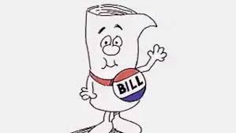

← Back to HomeBills are written and made through a process that begins when a member of Congress—either from the House of Representatives or the Senate—drafts a proposal for a new law. This draft, called a bill, is then introduced in either chamber of Congress, where it is assigned to a committee for review. The committee studies the bill, may hold hearings, and can suggest changes or amendments. If the committee approves it, the bill moves to the full chamber for debate and voting. If it passes one chamber, the bill goes to the other chamber and repeats the process. If both chambers approve the same version, the bill is sent to the President, who can either sign it into law or veto it. If vetoed, Congress can override the veto with a two-thirds majority vote in both chambers. This process ensures that laws are carefully considered and debated before being enacted.